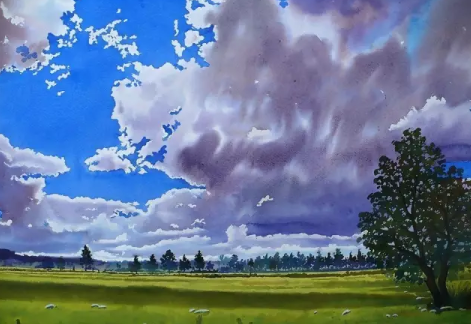

岁月
“人生无根蒂。飘如陌上尘。分散逐风转。此已非常身。盛年不重来。一日难再晨。”这是东晋田园诗人陶渊明《杂诗》八首之一的一段，表达一生中最好的时光是不会重来的，一天里也不能再经历一个早晨。岁月，是一条河流，或跌宕起伏，或柔若飘仙，她只会川流不息地向前走永远不会回头。
清晨，第一缕阳光洒在密密麻麻的叶林里，若隐若现出斑斑点点的五彩的羽毛，那是黎明里生命雀跃的第一篇章，高枝上闪动的臂膀，我仿佛看到天使的微笑。行人参差影，微风抖抖，撩起凌乱飘逸的发丝，叫醒娉婷的步履，拉长渐远扭曲的背影，那是勤劳的妇人一天最美的婀娜。
烟霞容与，老树盘根，腰身摇曳的是千年的裙痕，一圈一圈，迎光起伏，屹立在大地厚实的肩膀，宛若禅师身披金纱，推珠造福，神韵飞扬。
水桥边，玉柳成行，瘦菊含笑，游鸭击掌踏浪，沙哑的歌声，唱响诗行，宛若天籁传来的仙音，梦回唐朝。
醉亭下，童颜老者，双鬓斑白，追风起剑笑开颜，轻盈的舞步，翩跹自得，仿佛腾云驾雾的仙鹤栖身凡间。
如此怡人悦心的美景，在蹉跎沧桑的岁月的胶片里温存，一幕幕，一点点，抹不去生命的足迹，带不走历史的光芒。逝水流年，落花倾城。静坐幽亭，兰香泼墨，长长宣纸，点醒山河，曾几何，多少先人笔下，咏唱岁月的诗赋，水东流，人西去惟有天地常笑写春秋。
“人生易老天难老”，岁月不等人，光阴逝去，忘却生命里的磨难甘苦、富贵荣华、山盟海誓、地久天长、生离死别，在我们老去的那一天，心里留存的只有淡淡的释然，若《幽窗小记》里“宠辱不惊，看庭前花开花落；去留无意，望天上云卷云舒。”的人生境界了。
一老壶，端起的是人生的负重。
一清茶，飘落的是流年的悲喜。
一幽香，沉醉的是岁月的迟暮。
朝花夕拾，卷帘合砚，纷飞纸墨间，咏四时音音，挽一篮美景于心底，铭记天地间，尽岁月匆匆。日出日落，万物向阳，遥看红尘，心归于静，满袖清风，尽岁月之匆匆！
